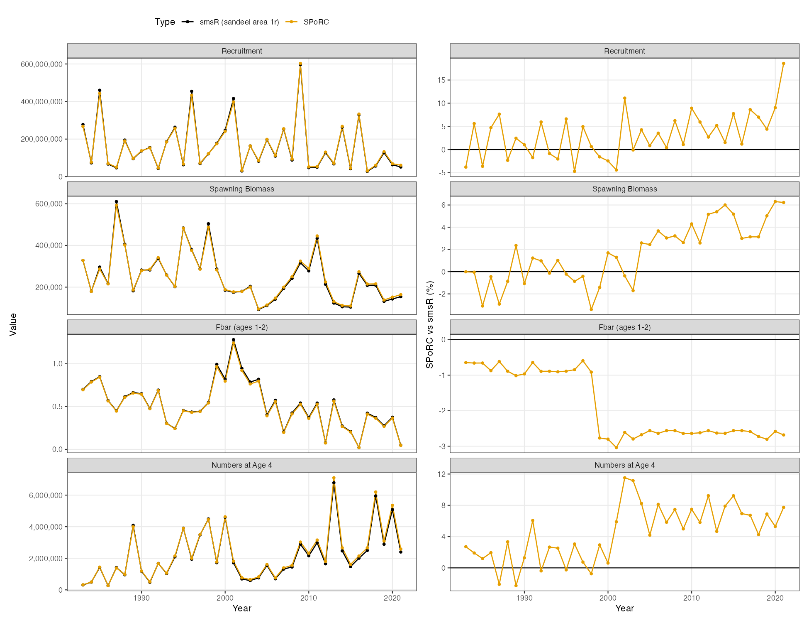

North Sea Sandeel (smsR bridge)
ah_north_sea_sandeel_case_study.RmdOverview
This case study bridges smsR, the seasonal assessment
model used for four North Sea sandeel stocks and for sprat, into
SPoRC. The stock is sandeel in area 1r, 1983 to 2021, ages
0 to 4, two seasons, one region and one sex.
smsR is an ICES model rather than one of the US
assessments the other case studies here bridge, and it is built
differently in two ways. Fishing mortality is driven by an observed
effort series rather than estimated year by year, and there are no
composition data at all: catch at age and survey at age enter directly
as lognormal observations, each age with its own catchability and its
own standard deviation.
SPoRC can fit both forms directly, so this reads as an
ordinary specification rather than a translation. Catch at age goes in
through ObsCatchAA and the survey through
ObsSrvIdxAA, with observation error and age-specific
catchability.
| Component | Years | Observations | Likelihood |
|---|---|---|---|
| Catch at age, ages 1 to 4, two seasons | 1983 to 2021 | 286 | Lognormal |
| Dredge survey, ages 0 to 1, season 2 | 2004 to 2021 | 36 | Lognormal |
| RTM survey, ages 1 to 3, season 1 | 2011 to 2020 | 30 | Lognormal |
| Recruitment deviations | 1983 to 2021 | 39 | Lognormal |
Because the model is single region and single sex, the population, region and sex subscripts collapse to one and are dropped from the notation below. The season subscript is retained in the following.
Model dimensions
Two seasons of equal duration, one fishery fleet per season, and the two surveys. A fleet per season is what gives each season its own catch observation error.
input_list <- Setup_Mod_Dim(
n_pop = 1,
years = yrs,
ages = ages,
lens = NA,
n_regions = 1,
n_sexes = 1,
n_seas = n_seas,
seasdur = c(0.5, 0.5),
n_fish_fleets = 2,
n_srv_fleets = 2,
verbose = TRUE
)Recruitment
Recruitment is a mean with annual deviations. smsR
treats its as a hockey stick, but the population dynamics set
recruitment to a free parameter each year and the hockey stick enters
only as a penalty on those deviations, carrying a weight of 0.05.
Spawning is at the start of season 1 and recruits enter in season 2, one
season later.
input_list <- Setup_Mod_Rec(
input_list = input_list,
rec_model = "mean_rec",
rec_lag = 1,
spawn_seas = 1,
t_spawn = 0,
use_fixed_rec_seas_prop = 1,
fixed_rec_seas_prop = matrix(c(0, 1), nrow = 1, ncol = n_seas),
sigmaR_spec = "fix",
do_rec_bias_ramp = 0,
init_age_strc = "free",
equil_init_age_strc = "equil",
ln_global_R0 = log(2e8)
)
# estiamte these freely so free N per age
input_list$map$ln_InitDevs <- factor(seq_along(input_list$map$ln_InitDevs))Biological dynamics
smsR carries natural mortality as a free array over age,
year and season. SPoRC builds seasonal mortality as an
annual rate scaled by season duration, so a free seasonal array cannot
currently represented. Setting the annual rate to the sum over seasons
preserves the annual trajectory exactly, because spawning biomass is
taken at the start of the spawning season and start of year numbers
depend only on annual totals. Only the within season split is
approximated, and that affects the observation layer rather than the
trajectory.
The recruitment age needs separate handling. Age 0 fish do not exist until season 2, so they are exposed to one season of mortality rather than two, and their annual rate is set so that the realized exposure matches.
Maturity is doubled. SPoRC multiplies spawning biomass
by 0.5 for single sex models, on the reasoning that a single sex model
represents both sexes combined, whereas the smsR ogive
already gives spawning biomass directly. Doubling maturity cancels that
convention and leaves the likelihood untouched. In a two season model
this factor is numerically identical to seasdur[1], which
is a coincidence and not the reason it is there.
# smsR carries its biologicals as [age, year, season]. SPoRC wants
# [pop, region, year, season, age, sex], the same numbers with three dimensions
# of length one, and one more for fleet on the weights a fleet sees.
WAA <- array(0, dim = c(1, 1, n_yrs, n_seas, n_ages, 1))
MatAA <- array(0, dim = c(1, 1, n_yrs, n_seas, n_ages, 1))
WAA_fish <- array(0, dim = c(1, 1, n_yrs, n_seas, n_ages, 1, 2))
WAA_srv <- array(0, dim = c(1, 1, n_yrs, n_seas, n_ages, 1, 2))
for(y in 1:n_yrs) {
for(seas in 1:n_seas) {
WAA[1, 1, y, seas, , 1] = lhs$west[, y, seas] # stock weight at age
MatAA[1, 1, y, seas, , 1] = lhs$mat[, y, seas] # proportion mature at age
for(f in 1:2) WAA_fish[1, 1, y, seas, , 1, f] = lhs$weca[, y, seas] # catch weight
for(k in 1:2) WAA_srv[1, 1, y, seas, , 1, k] = lhs$west[, y, seas]
} # end seas loop
} # end y loop
# smsR carries natural mortality by season; SPoRC scales an annual rate by season
# duration, so the annual sum preserves the annual trajectory...
M_sms <- lhs$M[, 1:n_yrs, ]
natmort <- array(0, dim = c(1, 1, n_yrs, n_ages, 1))
for(y in 1:n_yrs) {
annual_M = M_sms[, y, 1] + M_sms[, y, 2]
annual_M[1] = M_sms[1, y, 2] / 0.5 # age 0 is only present in season 2
natmort[1, 1, y, , 1] = annual_M
} # end y loop
input_list <- Setup_Mod_Biologicals(
input_list = input_list,
WAA = WAA,
WAA_fish = WAA_fish,
WAA_srv = WAA_srv,
MatAA = MatAA * 2, # cancels the single sex SSB halving in model dynamics
fit_lengths = 0,
M_spec = "fix",
Fixed_natmort = natmort,
addtocomp = 1e-5
)Movement and tagging
Single region, so movement is an identity matrix and no tagging data are used. However, both still have to be declared.
input_list <- Setup_Mod_Movement(
input_list = input_list,
use_fixed_movement = 1,
Fixed_Movement = NA,
do_recruits_move = 0
)
input_list <- Setup_Mod_Tagging(input_list = input_list, use_conv_fish_tagging = 0)Catch and fishing mortality
The observation error is coupled by a key matrix over age and fleet,
wjere equal entries share a parameter and NA excludes one.
smsR groups ages 1 and 2 against ages 3 and above,
separately by season, which is four standard deviations. With a fleet
per season that is a plain age by fleet key. Age 0 is never caught, so
it is represented with an NA.
# ages 1-2 and ages 3+ share a standard deviation, separately by season (fleets are defined as season x fishery fleet in this case to allow for seasonal selex)
# the key is age by sex by fleet; this stock is single sex, so the sex margin is 1
sigmaCAA_key <- array(c(NA, 1, 1, 2, 2,
NA, 3, 3, 4, 4), dim = c(n_ages, 1, 2))
nocatch <- as.matrix(sandeel_1r$nocatch)
ObsCatchAA <- UseCatchAA <- array(0, dim = c(1, n_yrs, n_seas, n_ages, 1, 2))
for(y in 1:n_yrs) {
for(s in 1:n_seas) {
for(a in 2:n_ages) { # age 0 is not fished
obs = sandeel_1r$Catch[a, y, s]
if(!is.na(obs) && obs > 0 && nocatch[y, s] == 1) {
ObsCatchAA[1, y, s, a, 1, s] = obs
UseCatchAA[1, y, s, a, 1, s] = 1
}
} # end a loop
} # end s loop
} # end y loop
input_list <- Setup_Mod_Catch_and_F(
input_list = input_list,
ObsCatch = array(0, dim = c(1, n_yrs, n_seas, 2)),
UseCatch = array(0, dim = c(1, n_yrs, n_seas, 2)),
ObsCatchAA = ObsCatchAA,
UseCatchAA = UseCatchAA,
sigmaCAA_key = sigmaCAA_key,
sigmaCAA_spec = "est",
catch_units = array("abd", dim = c(2)),
Use_F_pen = 0,
sigmaC_spec = "fix",
sigmaF_spec = "fix"
)A fleet fits the aggregated catch or the catch at age, never both. Supplying both is an error rather than a warning: they are the same information stated twice, and the factorization of an at-age observation into a total and a composition is exact for multinomial counts but not for the lognormal used here.
Effort driven fishing mortality
smsR writes fishing mortality as a seasonal scale times
a blocked age pattern times observed effort:
SPoRC builds it as selectivity times a mean and a
deviation:
where
| Symbol | Meaning | Here |
|---|---|---|
| age | 0 to 4 | |
| year | 1983 to 2021 | |
| season | 1 or 2, each half a year | |
| fishery fleet | 1 or 2; fleet fishes season alone | |
| the selectivity block year falls in | block 1 is 1983-1998, block 2 is 1999-2021 | |
| fishing mortality at age | what the two models have to agree on | |
| observed effort, a data series | median about 2100 | |
| fishery selectivity at age, constant within a block | 6 estimated values | |
log of the fleet’s scale, ln_F_mean
|
2 estimated values | |
fishing mortality deviation, ln_F_devs
|
held at , not estimated |
Setting and holding it there makes the two identical, because .
Written that way is a catchability. This is basically the effort model,
with scaling effort into fishing mortality and spreading it over ages. The deviations hold data rather than estimated quantities, so they are mapped off.
effort <- sandeel_1r$effort
dev_dim <- dim(input_list$par$ln_F_devs)
ln_F_devs <- array(0, dim = dev_dim)
for(y in 1:dev_dim[2]) {
for(seas in 1:dev_dim[3]) ln_F_devs[1, y, seas, ] = log(effort[y, seas])
} # end y loop
input_list$par$ln_F_devs <- ln_F_devs
input_list$map$ln_F_devs <- factor(array(NA, dim = dev_dim))
input_list$par$ln_F_mean[] <- -5 # starting values ... for 'q'Fishery selectivity
smsR zeroes fishing on age 0 through its age selectivity
and shares selectivity across ages 3 and above. Both are set through the
selectivity map: age 0 held at a value giving zero selection, and ages 3
and 4 sharing a parameter, in each of the two blocks.
Also, smsR writes its age pattern relative to a
reference: ages 3 and above are the top of the curve and the younger
ages are ratios to them, with the overall level living in the seasonal
scale. To mimick this, we use a free non-parametric selectivity curve on
log scale, without standardization:
with
the selectivity at age
in block
and
the estimated parameter behind it. Because nothing is divided out,
is a selectivity of exactly one and a large negative
is a selectivity of zero, so both of the things smsR fixes
are set by fixing
rather than by any extra machinery:
The first line is age 0, never fished. The second is block one’s reference, held at one so the level of fishing stays in . Everything else is estimated, and what it estimates is a ratio to that reference. Putting it together with the effort model above, fishing mortality at age is
There is no fishery index here, so that stream is declared empty.
empty_fish <- list(
ObsFishIdx = array(NA, dim = c(1, n_yrs, n_seas, 2)),
ObsFishIdx_SE = array(NA, dim = c(1, n_yrs, n_seas, 2)),
UseFishIdx = array(0, dim = c(1, n_yrs, n_seas, 2)),
ObsFishAgeComps = array(0, dim = c(1, n_yrs, n_seas, n_ages, 1, 2)),
UseFishAgeComps = array(0, dim = c(1, n_yrs, n_seas, 2)),
ISS_FishAgeComps = array(0, dim = c(1, n_yrs, n_seas, 1, 2)),
ObsFishLenComps = array(0, dim = c(1, n_yrs, n_seas, 1, 1, 2)),
UseFishLenComps = array(0, dim = c(1, n_yrs, n_seas, 2)),
ISS_FishLenComps = array(0, dim = c(1, n_yrs, n_seas, 1, 2)))
input_list <- do.call(Setup_Mod_FishIdx_and_Comps, c(
list(input_list = input_list,
fish_idx_type = rep("none", 2),
FishAgeComps_LikeType = rep("none", 2),
FishLenComps_LikeType = rep("none", 2),
FishAgeComps_Type = c("agg_Year_1-terminal_Fleet_1", "agg_Year_1-terminal_Fleet_2"),
FishLenComps_Type = c("agg_Year_1-terminal_Fleet_1", "agg_Year_1-terminal_Fleet_2")),
empty_fish))
# non-parametric selectivity at age, two blocks, ages 3 and 4 grouped
input_list <- Setup_Mod_Fishsel_and_Q(
input_list = input_list,
cont_tv_fish_sel = c("none_Fleet_1", "none_Fleet_2"),
fish_sel_blocks = c("Block_1_Year_1-16_Fleet_1", "Block_2_Year_17-terminal_Fleet_1",
"Block_1_Year_1-16_Fleet_2", "Block_2_Year_17-terminal_Fleet_2"),
fish_sel_model = c("nonparfree_Fleet_1", "nonparfree_Fleet_2"),
fish_q_blocks = c("none_Fleet_1", "none_Fleet_2"),
fish_sel_nonpar_est_bins = rep(list(list(list(1, 2, 3, c(4, 5)), list(1, 2, 3, c(4, 5)))), 2),
fish_fixed_sel_pars_spec = rep("est_all", 2),
fish_q_spec = rep("fix", 2))
# Fishery selectivity is one value per age, per block, shared by the two season
# fleets because smsR's age pattern does not vary by season.
sel_par <- rbind(block_1 = c(NA, 1L, 2L, NA, NA),
block_2 = c(NA, 3L, 4L, 5L, 5L))
# fish_fixed_sel_pars is [region, age, block, sex, fleet]. for "nonparfree" a
# value of 0 is a selectivity of one, and -10 is a selectivity of zero.
sel_start <- input_list$par$fish_fixed_sel_pars
sel_map <- array(NA_integer_, dim = dim(sel_start))
sel_start[1, , , 1, ] <- 0
sel_start[1, 1, , 1, ] <- -10 # age 0, never fished
for(b in 1:2) {
for(f in 1:2) sel_map[1, , b, 1, f] <- sel_par[b, ]
} # end b loop
input_list$par$fish_fixed_sel_pars <- sel_start
input_list$map$fish_fixed_sel_pars <- factor(sel_map)Survey index
smsR fits each survey age as its own lognormal series
with its own catchability: the Dredge over ages 0 and 1 in season 2, the
RTM over ages 1 to 3 in season 1, five catchabilities in total.
SPoRC does that through ObsSrvIdxAA.
Those five catchabilities do not need a parameter of their own.
smsR predicts a survey observation as
with
the index at age,
a catchability estimated separately at every age
of survey
,
the numbers at age,
how far into its season the survey happens, and
total mortality. SPoRC predicts the same thing as
which is the same equation with the age multiplier called selectivity
instead of catchability. A free catchability per age and a selectivity
estimated at age are one quantity written two ways, and estimating both
would be estimating it twice. So the age shape goes in selectivity,
again through "nonparfree", and there is no age-specific
at all:
srv_sel_nonpar_est_bins then does the grouping a
catchability key would, and an age left out of the list gets no
parameter, which is what an age a survey never sees wants.
# the Dredge runs in season 2 over ages 0-1, the RTM in season 1 over ages 1-3
srv_ages <- list(0:1, 1:3)
srv_seas <- c(2, 1)
ObsSrvIdxAA <- UseSrvIdxAA <- array(0, dim = c(1, n_yrs, n_seas, n_ages, 1, 2))
for(k in 1:2) {
for(a in srv_ages[[k]]) {
arow = which(ages == a)
for(y in 1:n_yrs) {
obs = sandeel_1r$survey[arow, y, k]
if(!is.na(obs) && obs > 0) {
ObsSrvIdxAA[1, y, srv_seas[k], arow, 1, k] = obs
UseSrvIdxAA[1, y, srv_seas[k], arow, 1, k] = 1
}
} # end y loop
} # end a loop
} # end k loop
# smsR groups its survey standard deviations by age within a survey
sigmaSrvIdxAA_key <- array(NA, dim = c(n_ages, 1, 2))
sigmaSrvIdxAA_key[2, 1, 1] <- 1
sigmaSrvIdxAA_key[2, 1, 2] <- 2
sigmaSrvIdxAA_key[3:4, 1, 2] <- 3
# The Dredge's age-0 value is held rather than estimated. Age 0 appears in this
# one index and nowhere else, and the recruitment deviations are free, so they
# fit it exactly: the residual goes to zero and the likelihood is unbounded.
sigmaSrvIdxAA_start <- array(log(0.5), dim = c(n_ages, 1, 2))
sigmaSrvIdxAA_start[1, 1, 1] <- log(0.4052) # smsR's own value
empty_srv <- list(
ObsSrvAgeComps = array(0, dim = c(1, n_yrs, n_seas, n_ages, 1, 2)),
UseSrvAgeComps = array(0, dim = c(1, n_yrs, n_seas, 2)),
ISS_SrvAgeComps = array(0, dim = c(1, n_yrs, n_seas, 1, 2)),
ObsSrvLenComps = array(0, dim = c(1, n_yrs, n_seas, 1, 1, 2)),
UseSrvLenComps = array(0, dim = c(1, n_yrs, n_seas, 2)),
ISS_SrvLenComps = array(0, dim = c(1, n_yrs, n_seas, 1, 2)))
input_list <- do.call(Setup_Mod_SrvIdx_and_Comps, c(
list(input_list = input_list,
ObsSrvIdx = array(NA, dim = c(1, n_yrs, n_seas, 2)),
ObsSrvIdx_SE = array(0, dim = c(1, n_yrs, n_seas, 2)),
UseSrvIdx = array(0, dim = c(1, n_yrs, n_seas, 2)),
ObsSrvIdxAA = ObsSrvIdxAA,
UseSrvIdxAA = UseSrvIdxAA,
sigmaSrvIdxAA_key = sigmaSrvIdxAA_key,
sigmaSrvIdxAA_spec = "est",
ln_sigmaSrvIdxAA = sigmaSrvIdxAA_start,
srv_idx_type = rep("abd", 2),
SrvAgeComps_LikeType = rep("none", 2),
SrvLenComps_LikeType = rep("none", 2),
SrvAgeComps_Type = c("agg_Year_1-terminal_Fleet_1", "agg_Year_1-terminal_Fleet_2"),
SrvLenComps_Type = c("agg_Year_1-terminal_Fleet_1", "agg_Year_1-terminal_Fleet_2")),
empty_srv))
# each survey enters at its own point in its own season
t_srv <- array(0, dim = c(1, n_seas, 2))
for(k in 1:2) t_srv[1, srv_seas[k], k] <- c(0.75, 0)[k]
input_list <- Setup_Mod_Srvsel_and_Q(
input_list = input_list,
cont_tv_srv_sel = c("none_Fleet_1", "none_Fleet_2"),
srv_sel_blocks = c("none_Fleet_1", "none_Fleet_2"),
srv_sel_model = c("nonparfree_Fleet_1", "nonparfree_Fleet_2"),
srv_q_blocks = c("none_Fleet_1", "none_Fleet_2"),
# one value per age each survey observes: the Dredge ages 0-1, the RTM ages 1-3
srv_sel_nonpar_est_bins = list(list(list(1, 2)), list(list(2, 3, 4))),
srv_fixed_sel_pars_spec = rep("est_all", 2),
srv_q_spec = rep("fix", 2),
t_srv = t_srv)Weighting
No data-weighting is done in this section, so everything is set at 1.
input_list <- Setup_Mod_Weighting(
input_list = input_list,
Wt_Catch = 1, Wt_FishIdx = 0, Wt_SrvIdx = 1, Wt_Rec = 1, Wt_F = 1, Wt_Tagging = 0,
Wt_FishAgeComps = array(0, dim = c(1, n_yrs, n_seas, 1, 2)),
Wt_FishLenComps = array(0, dim = c(1, n_yrs, n_seas, 1, 2)),
Wt_SrvAgeComps = array(0, dim = c(1, n_yrs, n_seas, 1, 2)),
Wt_SrvLenComps = array(0, dim = c(1, n_yrs, n_seas, 1, 2)))Fitting
input_list$par$ln_sigmaR[] <- log(1)
est <- fit_model(input_list$data, input_list$par, input_list$map,
random = NULL, newton_loops = 3, silent = F)| Quantity | Correlation | Largest annual discrepancy |
|---|---|---|
| Spawning biomass | 0.9999 | 3.13 % |
| Recruitment | 0.9999 | 3.33 % |
| Numbers at ages 1 to 4 | 1.0000 | 3.01 to 3.43 % |
| Fbar, ages 1 and 2 | 1.0000 | 0.64 % |

Discrepancies
Some things still differ from the reference smsR model.
Seasonal natural mortality is approximated. smsR carries
natural mortality as a free array over age, year and season, whereas
SPoRC scales an annual rate by season duration. Setting the
annual rate to the sum over seasons preserves the annual trajectory, and
only the within season split differs.
Also, the recruitment penalty is not the same statement.
smsR penalizes its deviations towards a hockey stick at a
weight of 0.05, while SPoRC assumes mean recruitment with
some annual deviations.